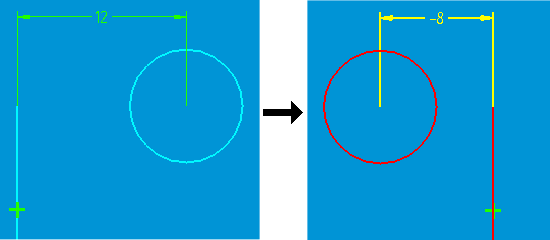
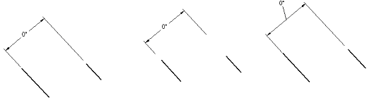

Zero and negative dimensions
You can use zero and negative values to manipulate geometry in the following dimension types:
-
Smart Dimension between two elements (or keypoints from two elements)
-
Distance between two elements (or keypoints from two elements)
-
Smart Dimension angle between two elements (or keypoints from two elements)
-
Angle between two elements (or keypoints from two elements)
After you place one of the above dimensions, you can change it to zero or a negative value to control element placement. When you select a dimension, its parents highlight.

Zero and negative dimensions work best on fully constrained geometry. When a profile or sketch is not fully constrained, negative dimensions can be unpredictable (unexpected change of side, for example).
Unsupported dimensions
Zero and negative dimensions are not supported for radial dimensions, diameter dimensions, and chamfer dimensions. Zero and negative dimensions also are not supported for dimension groups of chained or stacked dimensions.
For coordinate dimensions, however, you can set options on the Lines and Coordinate tab in the Dimension Style and Dimension Properties dialog boxes to allow negative values and to change the value of the origin (zero value) dimension.
Controlling zero and negative dimensions
Because positive and negative values need not follow the X axis or Y axis, there is no set positive or negative direction when you use zero and negative dimension values. Rather, the direction is determined by how the dimension is placed with respect to the other relationships affecting the geometry. When you change the sign of a dimension (from positive to negative, for example), the direction the distance is measured changes relative to the geometry only. A positive value is measured in the direction in which the dimension was originally placed.
If you change a dimension from driving to driven when its value is negative, the dimension is displayed as positive. A driven dimension can never be negative. Dimensions retrieved from part models are positive because they are always driven, and zero dimensions are not retrieved.
Displaying zero and negative dimensions
The following conditions apply to the display of zero and negative dimensions:
-
Text positions are processed as if the dimension were positive or nonzero (above, embedded, and so forth). Text position for zero values behaves as if the dimension were a very small positive value.
-
Zero dimensions do not move or change the dimension break position.
-
Dual unit display shows both united values with a negative sign.
-
Zero angular dimensions between two non-intersecting elements display as linear dimensions (but with a degrees symbol). You can drag the ends of the projection lines with handles or move the text position as shown below.
